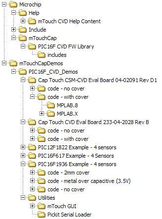

v1.1
Introduction
Thank you for downloading the mTouch PIC16F Framework.
The mTouch PIC16F Framework is a software package enabling designers to easily integrate touch technologies to their application. It combines high sensitivity with conducted and radiated noise immunity.
Simple configuration file allows for easy setup. Microchip also offers full source code access for more advanced touch designers.

mTouch CVD Framework File Tree
-
/Microchip
Contains the library, read-only source files for the mTouch CVD Framework.
-
/Help
Contains documentation for all the Microchip Application Libraries.
-
/mTouch CVD Help Content
Contains the documentation for the mTouch Framework.
-
/mTouchCap
-
/PIC16F CVD FW Library
Contains the C source (.c) files for the mTouch Framework.
IMPORTANT: The files in this directory should never be directly editted.
-
mTouchCVD.c implements the initialization, filtering, and decoding functions for the framework.
-
mTouchCVD_Acquistion.c implements a custom mTouch Acquisition method specific to the PIC and configuration.
-
mTouchCVD_Comm.c performs the required actions to communicate with the mTouch GUI.
-
main_example.c contains an example application implementation.
-
/includes
Contains the C header (.h) files for the mTouch Framework.
IMPORTANT: The files in this directory should never be directly editted.
These header files should be copied to the local application source directory and placed in a folder named 'includes'.
-
mTouchCVD.h the master header file for the mTouch Framework.
NOTE: When copying this file to the local application directory, rename it to mTouchCVD.h
-
mTouchCVD_Config.h stores the configuration options for the framework.
NOTE: When copying this file to the local application directory, rename it to mTouchCVD_Config.h
These header files should only be copied to the local directory if application-specific modifications are being made. The compiler will prioritize including local files over library files if the names match.
-
mTouchCVD_HardwareProfile_12F61x.h is one of many PIC-family-specific header files that contains information such available hardware modules, analog channel-to-port mapping, and default register configurations.
-
mTouchCVD_macroLibrary_PIC16F1.h is one of several PIC-core-specific header files that contains macros for generating the acquisition module of the mTouch Framework.
-
mTouchCVD_processConfiguration.h performs much of the pre-compiling work to confirm a valid configuration and then set up the flags and variables to aid the compiler in generating a custom mTouch application.
-
/mTouchCapDemos
-
/PIC16F_CVD_Demos
Provides some example, pre-configured projects for various PIC microcontrollers and setups.
-
/Cap Touch CSM-CVD Eval Board 04-02091 Rev D1
Example project implementing CVD on the mTouch evaluation board.
-
/code - no cover
The thresholds in this project have been raised due to the higher level of sensitivity.
-
/code - with cover
The thresholds in this project are lower than in the other due to the lower level of sensitivity.
-
/MPLAB.8
Pre-built MPLAB 8 project file with the correct configuration
-
/MPLAB.X
Pre-built MPLAB X project file with the correct configuration
-
/Cap Touch CVD Eval Board 233-04-2028 Rev B
Example project implementing CVD on the mTouch evaluation board.
-
/PIC12F1822 Example - 4 sensors
-
/PIC16F617 Example - 4 sensors
-
/PIC16F1936 Example - 4 sensors
-
/Utilities
Contains useful tools and reference materials that are not strictly related to the mTouch CVD Framework.
-
/mTouch GUI
Allows the designer to see live data from the mTouch sensors
-
/Pickit Serial Loader
Easy reflashing tool for the PKSA to have it behave as a UART-to-USB converter.